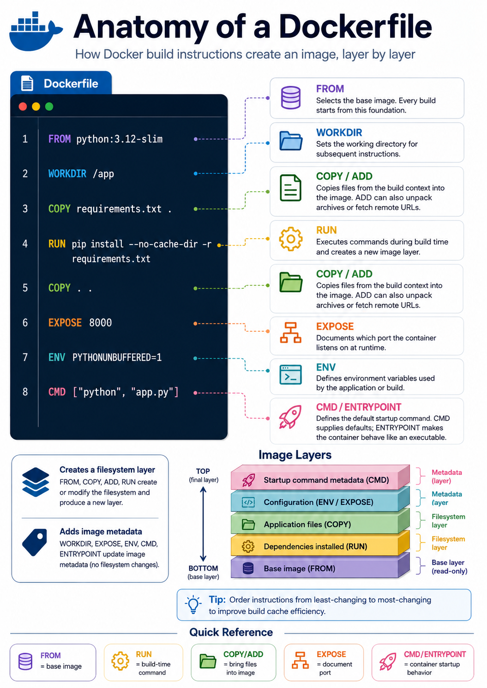

12 infographics available.
Docker
CI/CD
Workflow
CI/CD with Docker
Pipeline-oriented overview of how Docker images move through build, test, release, and deployment stages.
File: assets/infographics/cicd with docker.png
 Open full size
Open full size
Docker
Containers
Architecture
Containers vs VMs
Side-by-side comparison of container isolation and virtual-machine boundaries for faster conceptual grounding.
File: assets/infographics/containers vs vms.png
 Open full size
Open full size
Docker
Architecture
Docker Architecture
Visual map of the Docker client, daemon, registry, images, and containers as a working system.
File: assets/infographics/docker architecture.png
 Open full size
Open full size
Docker
Compose
Workflow
Docker Compose
Reference sheet for composing multi-container applications, services, and shared runtime dependencies.
File: assets/infographics/docker compose.png
 Open full size
Open full size
Docker
Security
Workflow
Docker Hygiene
Operational reminders for keeping images, containers, and local Docker usage from drifting into risk and clutter.
File: assets/infographics/docker hygiene.png
 Open full size
Open full size
Docker
Images
Build
Docker Image Layers
Compact explanation of layered images, cache behavior, and why small build decisions affect the final artifact.
File: assets/infographics/docker image layers.png
 Open full size
Open full size
Docker
Networking
Docker Networking
Guide to bridge, host, and container connectivity patterns that show how Docker moves traffic around.
File: assets/infographics/docker networking.png
 Open full size
Open full size
Docker
Security
Docker Security
Security-oriented summary of isolation, least privilege, image provenance, and practical hardening concerns.
File: assets/infographics/docker security.png
 Open full size
Open full size
Docker
Storage
Docker Storage
Overview of volumes, bind mounts, and the persistence choices that decide where container data actually lives.
File: assets/infographics/docker storage.png
 Open full size
Open full size
Docker
Workflow
Docker Workflow
Step-by-step picture of the day-to-day developer workflow around building, running, iterating, and shipping containers.
File: assets/infographics/docker workflow.png
 Open full size
Open full size
Docker
Build
Images
Dockerfile
Single-image explainer for the Dockerfile authoring model, from instructions and layers to image creation.
File: assets/infographics/dockerfile.png

Open full size
Docker
CLI
Essential Docker Commands
Command-focused quick reference for common image, container, and inspection tasks during routine Docker work.
File: assets/infographics/essential docker commands.png
 Open full size
Open full size
No matching infographics
Try a different title search or category.